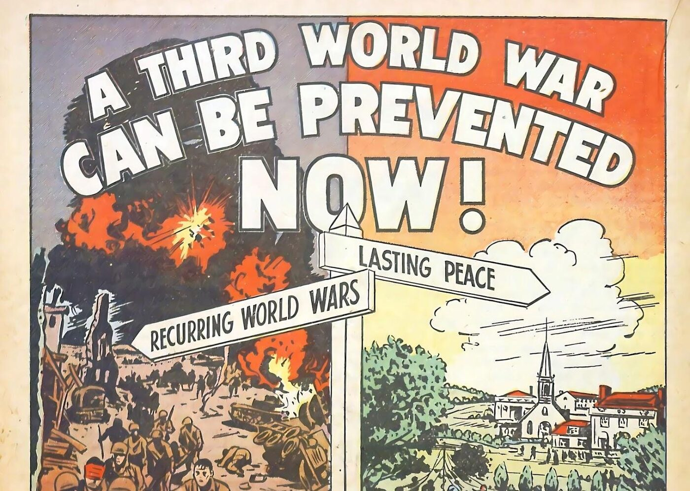

You're the fact-checker. For each part: read the comic on the left → get the check right → write 1–2 sentences. Done = 4 green checks + 4 answers, then turn in at the bottom.
- World organization = the United Nations (UN)
- League of Nations = the peace group made after WWI
- Dispute = argument
- Veto = a vote that can block a decision
- Human rights = rights every person has
- Security Council = the UN group that can act to stop wars
- Charter = the UN's founding rules

Click the page to make it bigger.
Turn in your work
Your work saves on this device, so you can come back later. Your teacher sees it after you turn it in.
Comic: "A Third World War Can Be Prevented Now!" True Comics #44 (1945), Parents' Magazine Press. Public-domain scan from the ComicBook Experience reading library (formerly comicbooks.com). Panels were cropped to today's reading.